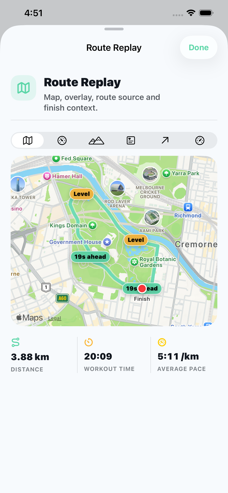
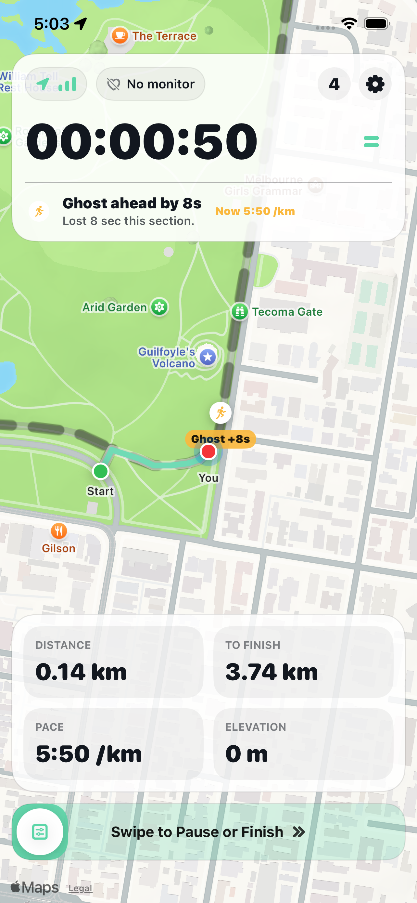
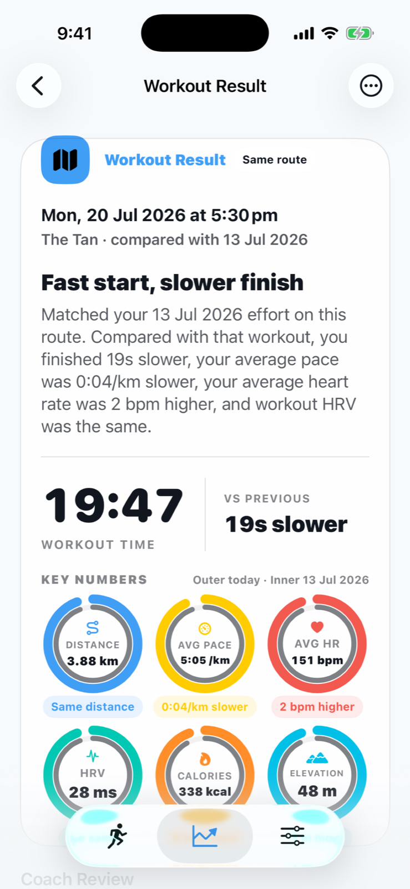
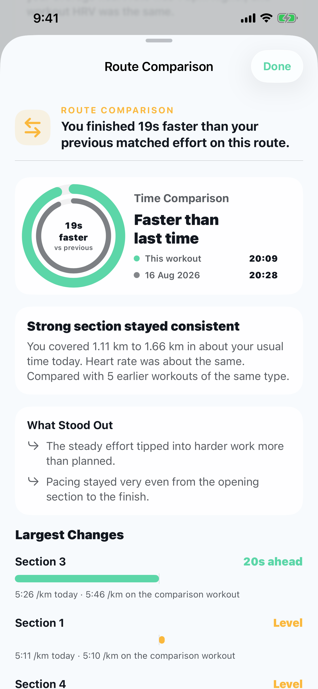
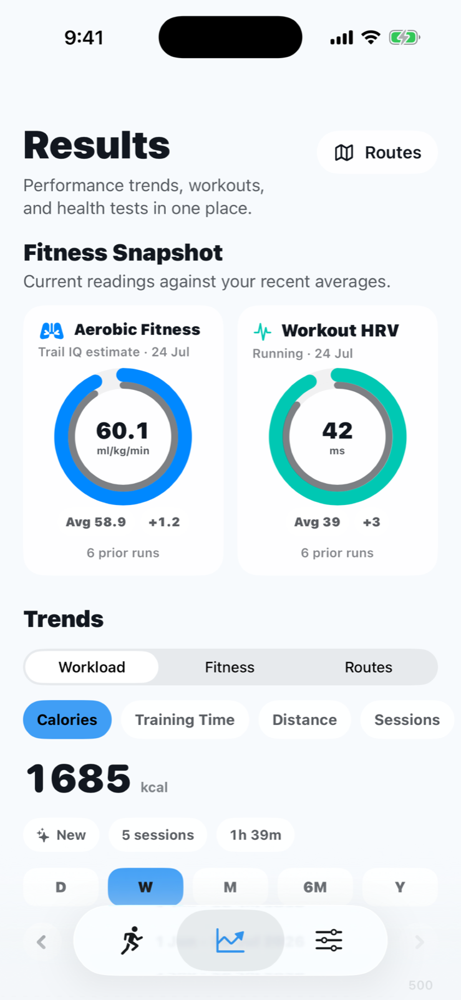

Replay the route
Review the route, overlays and finish context spatially.
Route-first outdoor training
Compare walks, runs and rides on the same route. Trail IQ learns from every return, shows what is coming and uses your own history to help with the next effort.
More than a workout log
Trail IQ turns repeat routes into personal training history. Record new workouts or bring in supported workout files, then compare like with like so a walk stays a walk, a run stays a run and every result has useful context.
It goes beyond telling you that one effort was faster. Trail IQ can show where time changed, how the effort compared and what your history suggests for the next attempt.


Go deeper
Explore the route workflow, learn how to read the data or check the choices that make Trail IQ different.
See how history works before, during and after a repeated workout.
Guides Read the data betterTurn pace, effort and route sections into useful questions and actions.
Effort Add heart-rate contextLearn what a compatible Bluetooth monitor adds and what remains optional.
Choose Compare the approachesSee how Trail IQ differs from Strava, Moment and Apple Race Route.
Built for the route ahead
Advanced route and heart-rate tools stay understandable, optional and focused on the workout.
Follow route progress, remaining distance and segment context. Choose a previous effort as your live ghost when you want a target.
Use a compatible Bluetooth monitor for live zones, heart-rate goals, workout HRV where supported and richer post-workout review. Explore Bluetooth heart-rate training.
Optional on-screen guidance, distinct tones, haptics and short spoken cues can signal route, segment and effort changes without taking over your workout.
Route Comparison, Route Replay, Coach Review and three focused highlight reports turn maps and metrics into a result you can act on.
Designed to be read at a glance
Maps, comparison rings and focused charts make the important result visible first. Detail is there when you want it.

Review the route, overlays and finish context spatially.

See today, the previous matching effort and the sections that changed. Learn how same-route comparison works.

Explore training trends and fitness snapshots when relevant data exists.
Private by design
Trail IQ is local-first. It does not upload your health data to Trail IQ servers, does not use third-party advertising and does not track you across apps or websites.
Record. Understand. Return.
Trail IQ is built for the morning walk, the regular running loop and the ride you know well enough to want to ride better. Five completed workouts are included, then Full Access is one purchase with no recurring subscription.